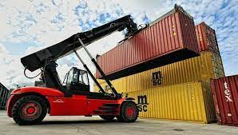
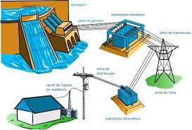
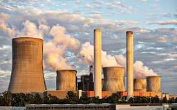
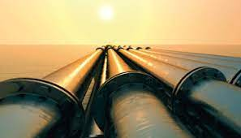

Definição:
Energia mecânica é a soma da energia cinética e da energia potencial de um objeto.
Então, a energia mecânica total de um objeto é a combinação dessas duas energias. Se um objeto está em movimento e também tem uma certa altura, ele tem energia mecânica tanto pela sua velocidade quanto pela sua posição.
Exemplos de Energia Mecânica:
Ao lançar uma bola
No momento do lançamento: A bola tem energia cinética (devido à sua velocidade) e nenhuma energia potencial gravitacional (pois está no nível inicial). No ponto mais alto: A velocidade da bola é zero, então sua energia cinética é zero. No entanto, a bola tem energia potencial máxima devido à altura que atingiu. Durante o movimento, a energia cinética é convertida em energia potencial enquanto a bola sobe, e, ao cair, a energia potencial é convertida de volta em energia cinética.
Movimento de veículos e máquinas:
A energia mecânica é fundamental para a utilização de maquinários bem como o funcionamento de usinas de energia de diversos modods, sendo o mais conhecido a rotação dos prótons dentro de dínamos presentes nas turbinas eólicas.

Geração de eletricidade:
Pode ser utilizada em usinas hidrelétricas, termelétricas e eólicas para gerar eletricidade. Em usinas hidrelétricas, por exemplo, a energia mecânica da água em movimento é convertida em energia elétrica por meio de turbinas e geradores.

Indústria:
É amplamente utilizada na indústria para operar máquinas e equipamentos, como prensas, serras, guindastes, transportadores e demais ferramentas.

Construção civil:
Ela é essencial para a execução de obras de construção civil, sendo utilizada em máquinas como escavadeiras, tratores, betoneiras, guindastes, entre outras.
Agricultura:
Representa um papel importante na agricultura, sendo empregada em tratores, colheitadeiras, pulverizadores, irrigadores e demais equipamentos agrícolas.
Transporte de fluidos:
Tambem é utilizada em sistemas de bombeamento para transportar fluidos como água, óleo, gás e produtos químicos por meio de tubulações e encanamentos.
